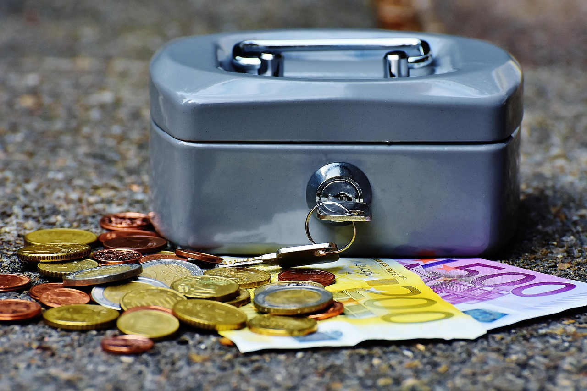

La importancia de un fondo de emergencia
Publicado el 17 de mayo de 2025 ¿Qué harías si mañana te quedas sin trabajo, tienes una urgencia médica o se rompe tu coche? Si no tienes una respuesta clara y tus finanzas tambalearían, necesitas un fondo de emergencia. Esta es la base de toda estrategia financiera responsable.
¿Qué es un fondo de emergencia?
Es una reserva de dinero creada exclusivamente para cubrir gastos inesperados, sin recurrir a préstamos, tarjetas o deudas. No está destinado a caprichos, compras planeadas o vacaciones: su único propósito es protegerte en momentos críticos.
¿Por qué es vital tener uno?
- Seguridad: Te permite enfrentar imprevistos sin estrés.
- Estabilidad: Evita que interrumpas tu inversión o ahorros por objetivos.
- Libertad: Te da margen de maniobra para tomar decisiones sin urgencia.
- Prevención: Reduce la dependencia de créditos con intereses abusivos.
¿Cuánto dinero debería tener?
Lo ideal es entre 3 y 6 meses de tus gastos fijos. Si tu coste mensual es 900€, deberías tener entre 2.700€ y 5.400€. La cifra exacta depende de tu estabilidad laboral, responsabilidades y otras fuentes de ingreso.
¿Dónde guardar el fondo de emergencia?
En una cuenta de ahorro separada, accesible pero sin tarjeta ni conexión directa con tu cuenta principal. Así reduces el riesgo de gastarlo por impulso. Algunas personas lo colocan en cuentas remuneradas con disponibilidad inmediata.
¿Cómo empiezo a construirlo?
- Define tu objetivo (3-6 meses de gastos).
- Automatiza una transferencia mensual (aunque sea pequeña).
- Usa ingresos extra (bonos, devoluciones, ventas) para acelerarlo.
- No lo toques salvo emergencia real.
Errores comunes
- No tenerlo: Vivir al día es riesgoso y estresante.
- Invertirlo: No debe estar en activos volátiles. Su valor debe ser estable y disponible.
- Usarlo para cosas no urgentes: Un iPhone nuevo no es una emergencia.
Conclusión
Tu fondo de emergencia es el salvavidas financiero que puede marcar la diferencia entre una crisis y un inconveniente manejable. Empieza a construirlo hoy, paso a paso. No se trata de cantidad, sino de seguridad y previsión. Tu yo del futuro te lo agradecerá.
← Volver a artículos